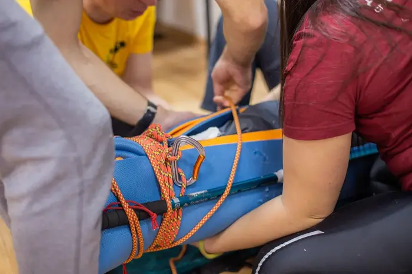

Injury check and immobilization
Once breathing is confirmed or restored, look for injuries and stop bleeding — this is no place for modesty.
- Check the whole body for bleeding and injuries, including hidden areas — groin, armpits, stomach, under clothing.
- If the victim is conscious, ask permission to examine them, but don't skip it out of politeness — modesty can cost a life.
- With severe arterial bleeding you're counting seconds — permanent damage can start in as little as 10–15 seconds, so cut or pull off clothing over the wound immediately.
- Stop the bleeding with a pressure bandage, tourniquet, or improvised tourniquet — learn this on a hands-on course beforehand, not from instructions under stress.
- If a fracture or spinal injury is suspected, immobilize the area with whatever you have (a backpack, a sleeping pad, a splint) before moving the victim at all.
